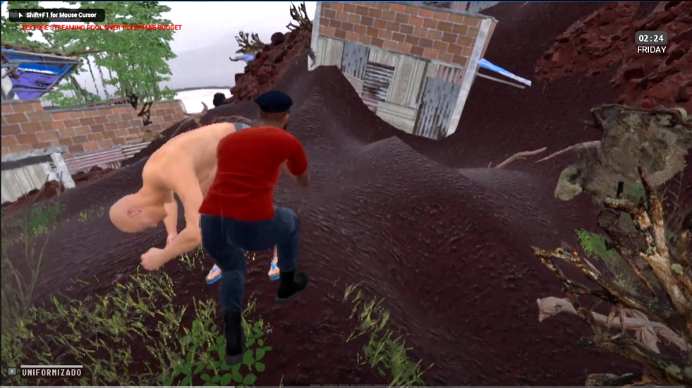
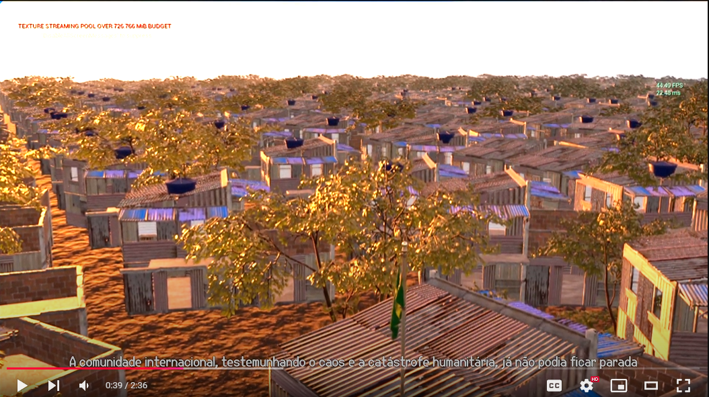
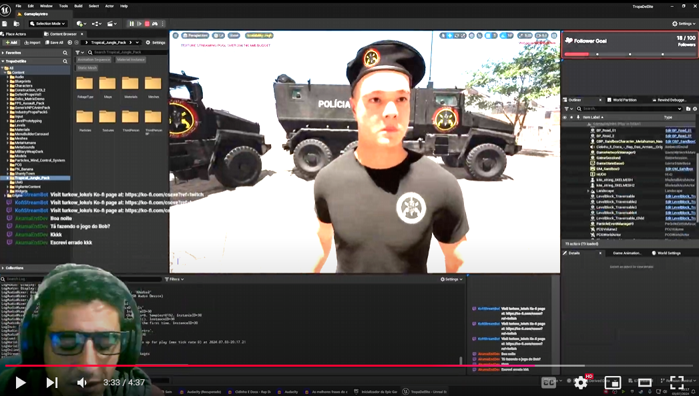
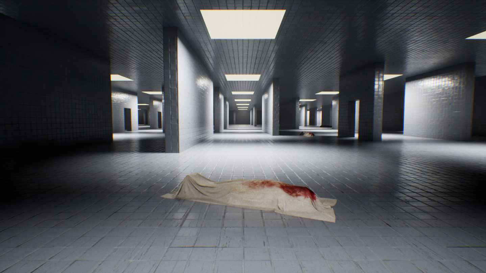
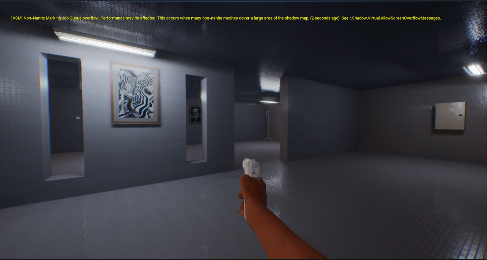
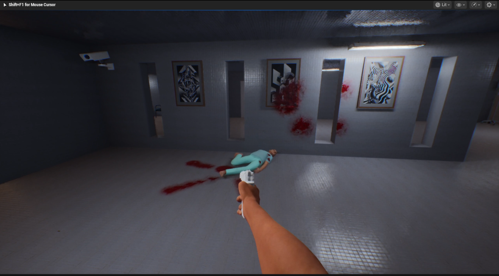

Gustavo ‘TurkowLoKo’ Bolanho - Game Developer, Digital Artist & Animator
About Me
Hi, I’m Gustavo! I’m a programmer at heart who truly loves to code. My journey in software development began at age 12, starting with VB6 and .NET, which naturally guided me towards C# and, subsequently, the Unity Engine. Over time, my passion for creating interactive experiences led me to gradually evolve into a Generalist Digital Artist and Animator. I’ve dived deep into various game engines, always driven by a desire to understand technology from core systems programming to crafting compelling visual elements and animations. I thrive on learning and applying this broad skill set to bring virtual worlds and characters to life, with my current focus culminating in the ambitious solo project, “Sanatorio.”
My Journey & Past Projects: Building the Foundation
The projects below represent key milestones in my learning and skill development, each contributing to the expertise I now pour into “Sanatorio.”
The Early Days: Foundations in Programming (Pre-2011)
My programming journey began with VB6 (Basic) and the .NET universe, pivotal for my later work with C# in game engines.
- Circa 2008: 3D Game Studio & Lite-C
- First game engine experience, learning scripting with Lite-C.
- DarkBasic: Early framework bridging Basic with OpenGL.
2011: The Unity Awakening - “Sanatorio” (The Original Spark)
Discovering Unity (v2.5) during my Computer Science studies ignited a passion.
- Project: “Sanatorio” (3D Horror FPS - Original Version)
- Primary learning ground for Transforms, Quaternions, Vectors using C#.
- Implemented 3D character physics, inventory, and weapon switching from scratch.
- An incredible lesson in resilience and self-driven learning.
- Showcase (Original 2011 Version):
Venturing into UDK & Unreal Engine 4
Exploration of the Unreal Development Kit (UDK) with Kismet deepened my visual programming skills. The shift to UE4 was a game-changer, allowing me to dive into:
- Shader Programming & Environment Art: Recreated a classic game map, learning lighting and shaders.
- Hackathon & Professional Experience (Chile): Worked at an indie studio creating educational experiences in UE4.
- FPS Project for BGS 2016 (Brazil): Programmer for an FPS showcased at Brasil Game Show.
- Showcase:
- Niagara VFX: Developed robust visual effects with Unreal’s Niagara system.
- Showcase (Gore VFX):
Mastering Unreal Engine 5 & Other Engines
UE5 marked a new level of professional output, alongside explorations in Godot Engine.
- Project: “Kurumin” (Ambitious Indie Game - UE5)
- Full development workflow: Blender (modeling, texturing, rigging, animation) & UE5 (animation/gameplay programming with Metahumans).
- Showcase:
- Project: “BRABO” (Tech Showcase - UE5)
- Tutorial-focused project using Lumen, Nanite, & PCG.
- Showcase:
-   
- BRABO Devlog Playlist (YouTube)
- Godot Engine Projects:
- “Potato Boom” & “Taxi Flight” (Android Games): Explored GDScript, Java integration, procedural audio, and unique 2D-like rendering from 3D assets.
- “Project: Extractor” & “CS.EXE” (3D Studies): Deep dived into Godot’s 3D capabilities, GLTF, GLSL, YarnSpinner, and Jolt Physics.
Sanatorio: The Current Solo Endeavor (UE5)
“Sanatorio” is more than just a game project for me; it’s the central focus of my current creative and technical efforts, a deeply personal endeavor where I’m channeling years of accumulated knowledge. Revisiting this concept, which first sparked my passion for game development, I am now meticulously crafting its modern incarnation using Unreal Engine 5. This is a solo mission: I’ve transformed my room into a dedicated development studio, pouring 10-12 hours daily into every facet of “Sanatorio”—from programming complex systems and designing intricate gameplay mechanics to modeling environments, creating characters, animating, and implementing visual effects.
This intense dedication is fueled by a profound passion to realize a singular vision. For me, working on “Sanatorio” is also a vital means of achieving mental balance and constructively channeling my creative drive. My objective is to build a compelling, polished, and immersive horror experience that not only stands as a testament to my capabilities as a solo developer but also resonates deeply with players. I am leveraging the full spectrum of my skills as a programmer, generalist artist, and animator to bring this world to life.
-
-
Dive Deeper into Sanatorio’s Development:
- Technical Insights & Progress: Sanatorio on IndieDB
- Visual Glimpses (Work in Progress):
- 
- 
-  (Replace mockups with actual image paths when ready)
The Generalist Advantage: Crafting “Sanatorio”
The diverse journey through various technologies and roles—from pure programming to 3D art and animation—has equipped me with a comprehensive generalist skill set. This breadth of experience is invaluable, especially for an ambitious solo project like “Sanatorio.” It allows me to:
- Architect and Implement Robust Systems: My programming foundation (C++, Blueprints, GDScript) enables me to build complex gameplay mechanics, AI, and underlying game systems efficiently.
- Create Cohesive Visuals: Skills in modeling (Blender), texturing, lighting, VFX (Niagara), and animation ensure that the artistic vision for “Sanatorio” is realized consistently.
- Optimize the Entire Pipeline: Understanding both the artistic and technical sides helps in creating efficient workflows and optimized assets, crucial for performance.
- Develop Custom Tools: I can (and love to) create scripts and editor utilities to automate repetitive tasks and streamline the development process, making solo development more manageable.
- Solve Problems Holistically: A generalist perspective means I can anticipate and resolve challenges that span multiple disciplines, ensuring smoother development.
This portfolio showcases the evolution of these skills, all of which are now being synthesized and pushed further in the creation of “Sanatorio.”
Broader Tech Stack & Software Engineering Skills
While “Sanatorio” and game development are my current prime focus, my love for programming extends to a wide array of technologies used in various software engineering projects. This broader foundation in software architecture and development practices enriches my approach to game creation.
Languages and Tools:


Connect & Follow the Journey
- Email: jdmapas@gmail.com
- GitHub (Personal Contributions): gbolanho
- GitHub (TurkowLoKo - Sanatorio & Projects): turkowloko
- Twitter/X (Updates & Musings): @gustavobolanho